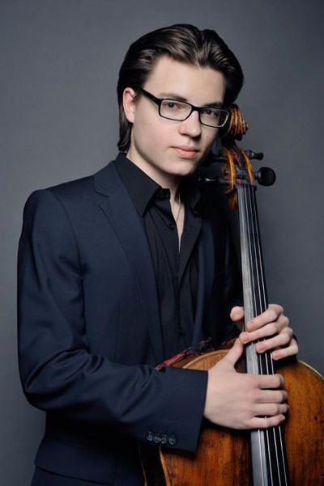

Julian Bachmann (Alemania)

Mannheim, Alemania 1993. Julian A los diez años fué aceptado en la Universidad de Música de Mannheim con Michael Flaksman. En 2011 comenzó sus estudios en la Universidad de Música de Karlsruhe bajo la tutleta de Martin Ostertag. Clases magistrales con Daniel Müller-Schott, Bernard Greenhouse (Trío Beaux Arts), Wolfgang Boettcher, Steven Isserlis, Ivan Monighetti, Wolfgang Emanuel Schmidt y Jens-Peter Maintz (Kronberg Academy) le han dado un nuevo impulso.
Ganó el 1er premio en la competencia nacional alemana "Jugend musiziert" y los concursos internacionales de Violonchelo Janigro Antonio y el Premio de la Música Peter Aab.
Como solista y como músico de cámara ha sido invitado con frecuencia a famosos festivales de música como Schleswig-Holstein Musikfestival, Otoño Festival Festspielhaus Baden-Baden, Festival Mozart de Würzburg, ZeitGenuss Festival de Karlsruhe, Schwetzinger Festspiele y el Festspiele Mecklenburg-Vorpommern. Se ha presentado como solista con numerosas orquestas como la Filarmónica de Heidelberg, la Orquesta de Cámara Kurpfalz, la Filarmónica de Baden-Baden, la Stamitz-orquesta de Mannheim, la Orquesta Universitaria de Estrasburgo y la Orquesta Filarmónica de Cámara de Polonia.
Su joven carrera le ha llevado a conciertos internacionales en Alemania, Francia, Croacia, Polonia, Austria, Suiza, Turkye, China, Brasil e Italia.
Se presentó en el concierto "Rostropowitsch y sus amigos" en Ludwigshafen, en la hora del té Clásicos en la Laeizhalle Hamburgo y grabó obras violonchelo de Tchaikovsky como solista acompañado por la Orquesta Sinfónica Juvenil Mannheim. Julian Bachmann colabora regularmente con compositores contemporáneos, incluyendo Aulis Sallinen, Jörg Widmann, Zeynep Gedizlioglu y Wolfgang Rihm y ha jugado la música de cámara con Cyprien Katsaris, Eduard Brunner, Tianwa Yang y Sayaka Shoji.
Ha sido galardonado con becas de la Deutsche Stiftung Musikleben, la Fundación Jürgen Ponto, la Fundación Villa Musica Rheinland-Pfalz (Stiftung "Villa Musica" Rheinland-Pfalz) y la Iniciativa de Renania-Palatinado para el futuro.
Él es miembro activo de la Fundación Yehudi Menuhin "Live Music Now".
Julian Bachmann toca el "Ex Piatti" un violonchello fabricado por Giovanni Grancino, elaborado en Milán en 1700, prestado amablemente por la colección de Instrumentos Musicales, Baden-Wurttemberg.
Ganó el 1er premio en la competencia nacional alemana "Jugend musiziert" y los concursos internacionales de Violonchelo Janigro Antonio y el Premio de la Música Peter Aab.
Como solista y como músico de cámara ha sido invitado con frecuencia a famosos festivales de música como Schleswig-Holstein Musikfestival, Otoño Festival Festspielhaus Baden-Baden, Festival Mozart de Würzburg, ZeitGenuss Festival de Karlsruhe, Schwetzinger Festspiele y el Festspiele Mecklenburg-Vorpommern. Se ha presentado como solista con numerosas orquestas como la Filarmónica de Heidelberg, la Orquesta de Cámara Kurpfalz, la Filarmónica de Baden-Baden, la Stamitz-orquesta de Mannheim, la Orquesta Universitaria de Estrasburgo y la Orquesta Filarmónica de Cámara de Polonia.
Su joven carrera le ha llevado a conciertos internacionales en Alemania, Francia, Croacia, Polonia, Austria, Suiza, Turkye, China, Brasil e Italia.
Se presentó en el concierto "Rostropowitsch y sus amigos" en Ludwigshafen, en la hora del té Clásicos en la Laeizhalle Hamburgo y grabó obras violonchelo de Tchaikovsky como solista acompañado por la Orquesta Sinfónica Juvenil Mannheim. Julian Bachmann colabora regularmente con compositores contemporáneos, incluyendo Aulis Sallinen, Jörg Widmann, Zeynep Gedizlioglu y Wolfgang Rihm y ha jugado la música de cámara con Cyprien Katsaris, Eduard Brunner, Tianwa Yang y Sayaka Shoji.
Ha sido galardonado con becas de la Deutsche Stiftung Musikleben, la Fundación Jürgen Ponto, la Fundación Villa Musica Rheinland-Pfalz (Stiftung "Villa Musica" Rheinland-Pfalz) y la Iniciativa de Renania-Palatinado para el futuro.
Él es miembro activo de la Fundación Yehudi Menuhin "Live Music Now".
Julian Bachmann toca el "Ex Piatti" un violonchello fabricado por Giovanni Grancino, elaborado en Milán en 1700, prestado amablemente por la colección de Instrumentos Musicales, Baden-Wurttemberg.